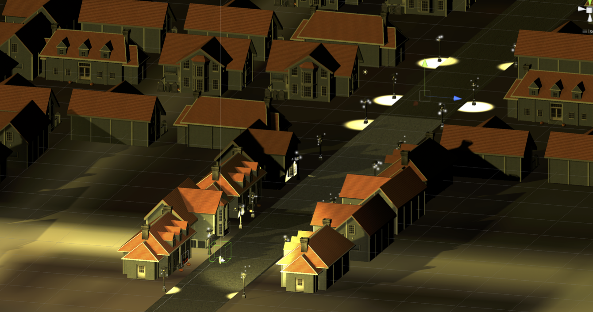
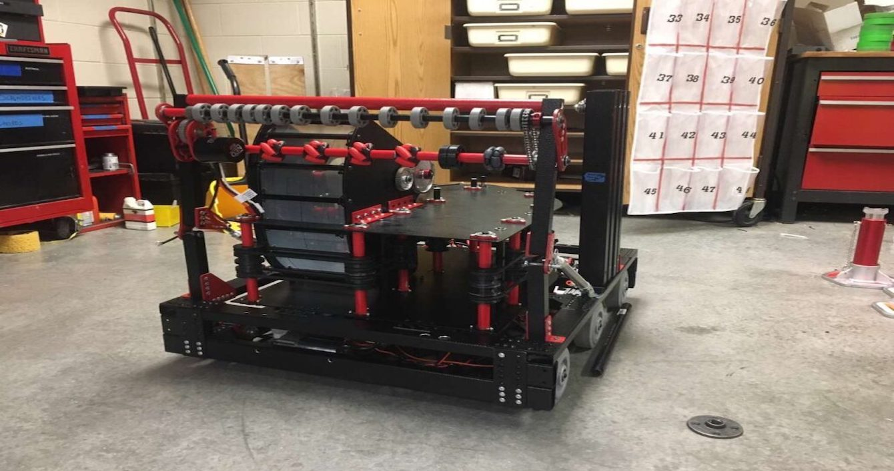
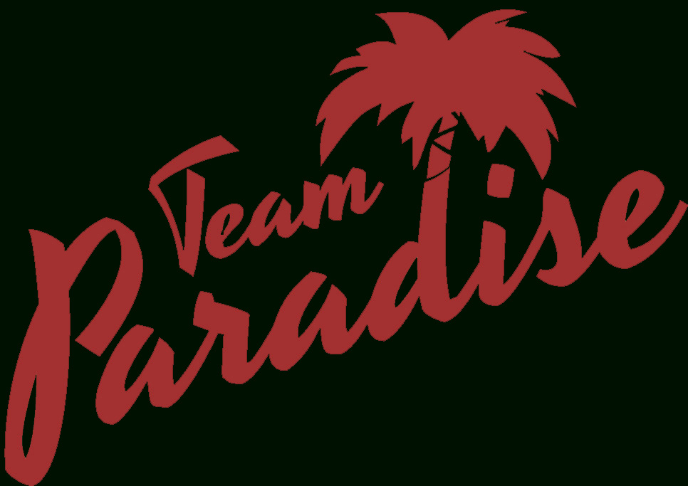

In the midst of the coronavirus Pandemic a group of two freshman and two sophomores participated in their first hackathon, Sunhacks 2020. We decided we wanted to make a project that had some kind of useful aspect to it given the circumstances. As one of our favorite holidays was fast approaching with no safe way to celebrate we decided to make a virtual reality Trick or Treating Simulator.
My Freshman year of High School I heard that my High School was starting a Robotics team. I had been participating in different robotics programs since I was 8 and had no plans of stopping, so I joined. Becoming the head of Programming and Electrical my Freshman year we went on to win many awards throughout my entire High School career. We made it to the world championship competition and learned so much while doing it. Pictured above is my teams robot from my Senior year when I was President of the team. Unfortunately our competitions were cancelled that year due to the Coronavirus Pandemic.


I have always been involved with many robotics teams and in the Summer of 2022 I had the opportuntity to join a Local High-School Robotics Team as a coach. The First thing I saw that needed to happen with this team was their organization and branding needed lots of help. I spent considerable time working with them through creating branding standards and documents that we would send to potential sponsor. Then the opportunity for a website refresh came around. This website is created by me, while using it as an opportunity to teach some students about Web-Design Fundamentals.
In my time working at the Scottsdale Unified School District I had the pleasure of working on many projects, both physical, construction projects, and digital projects where I was able to apply my programming and design knowledge. The Bond Project Presentation is a way for our team to show the community what we have been working on, and there is a lot of code running behind the scenes to make everything happen as seemlessly as possible.

*This website is still under construction*